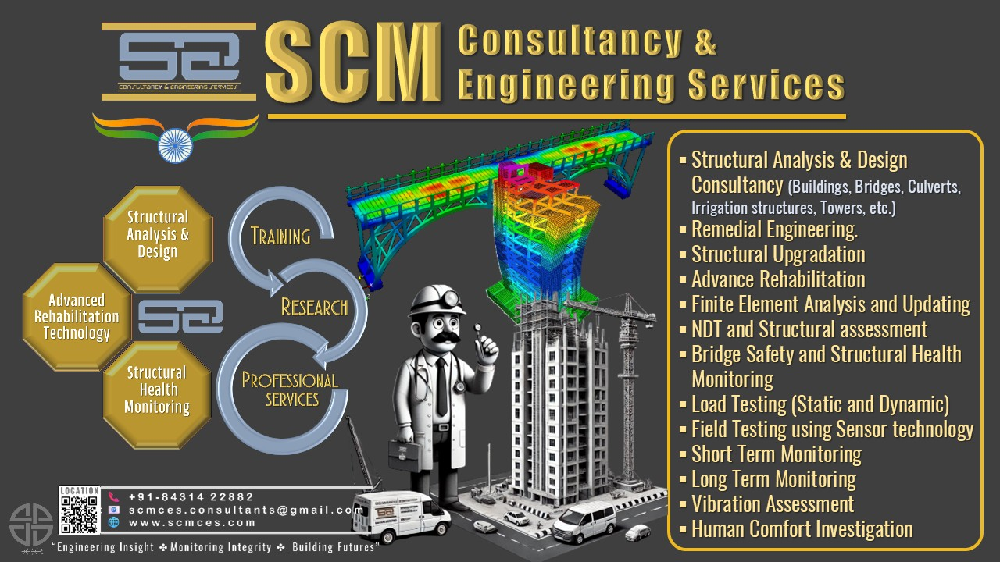
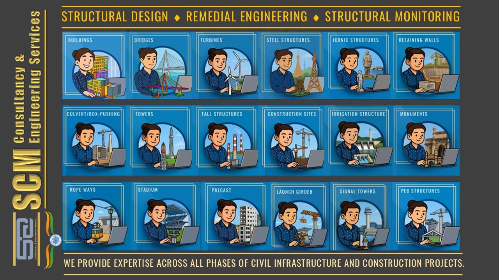
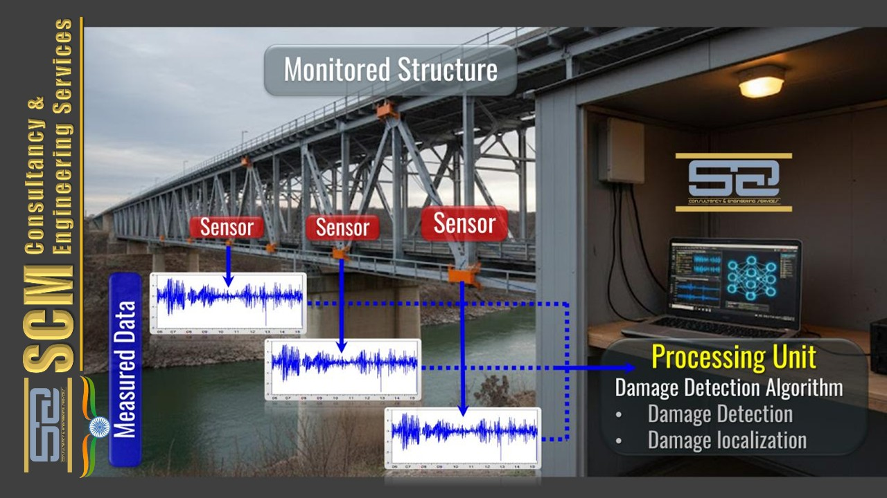
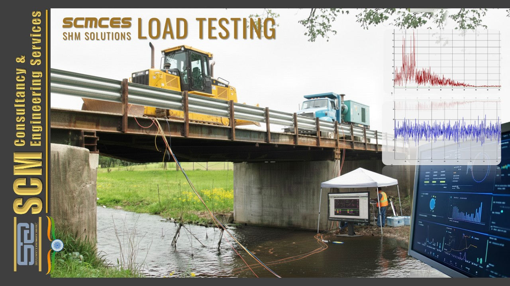
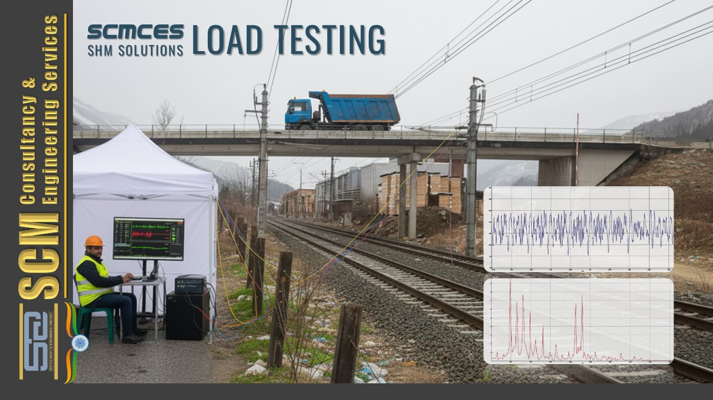
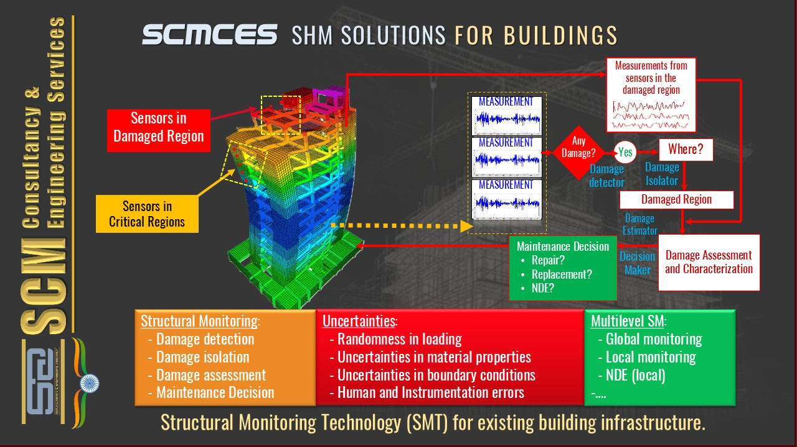
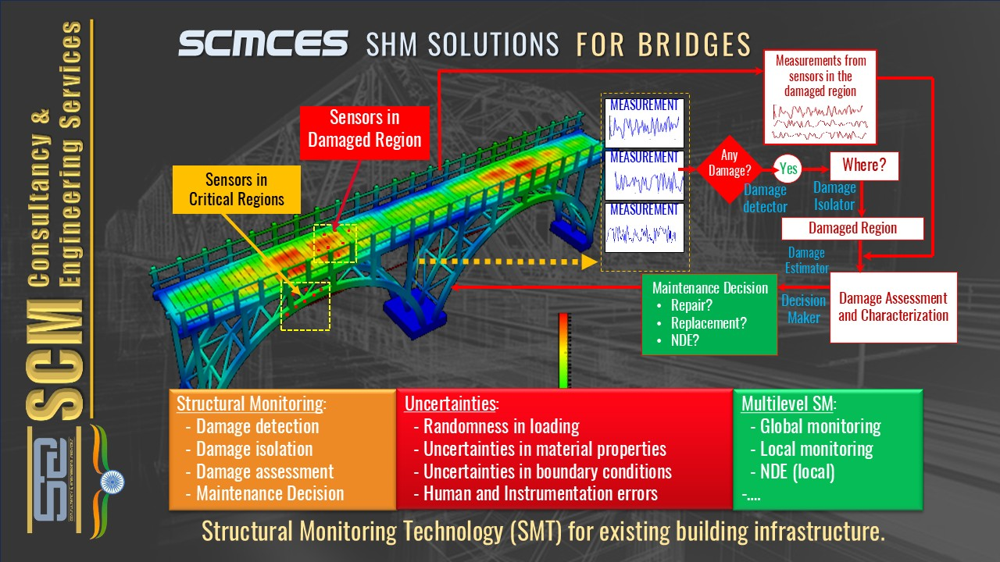
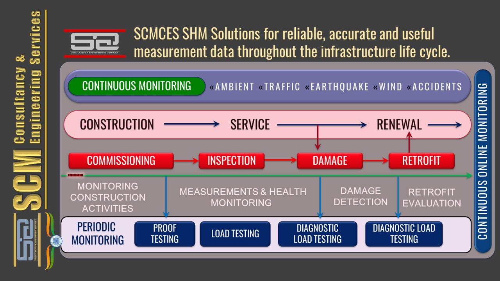
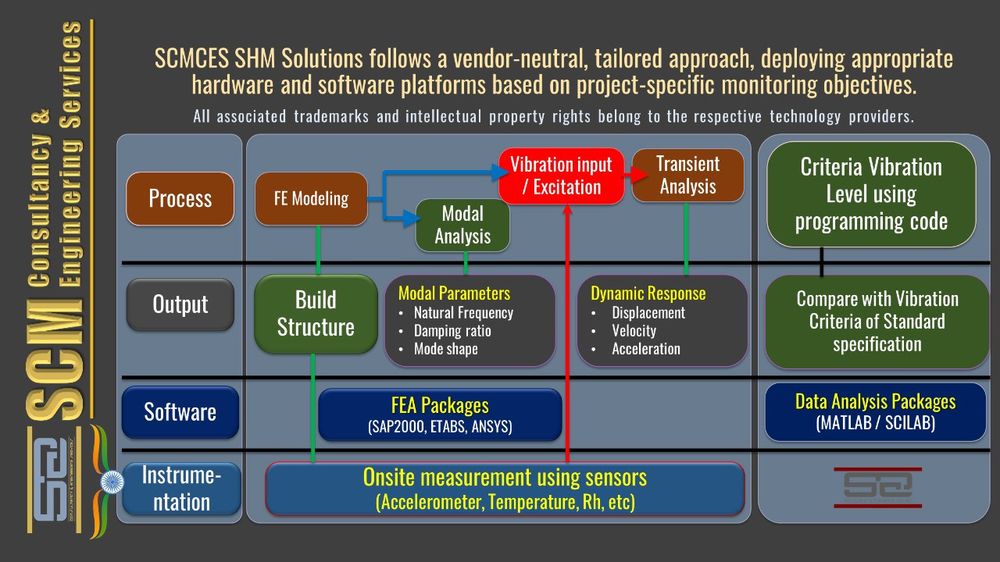
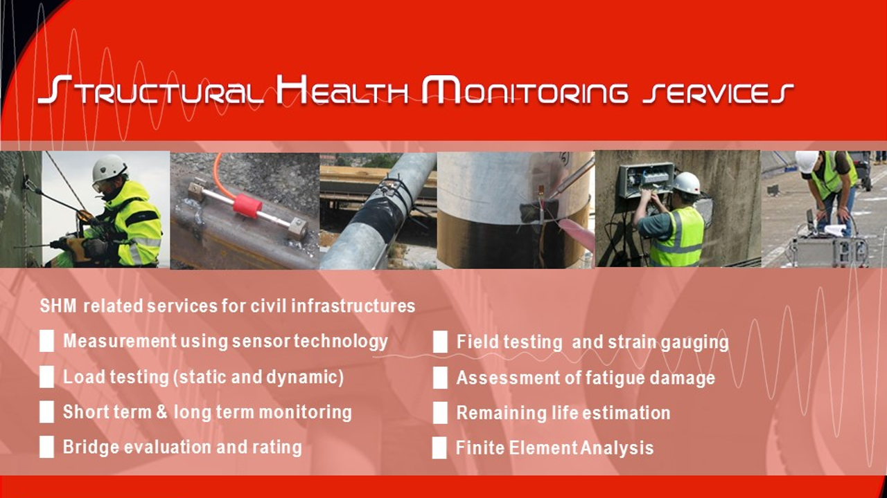

SCMCES – Structural Health Monitoring (SHM) Services
Protecting Sensitive Infrastructure | Extending Service Life
SCMCES provides engineering-driven, sensor-based Structural Health Monitoring (SHM) consultancy services to asset owners, consultants, EPC contractors, and authorities.
Instrumentation Scheme Recommendation for Structural Health Monitoring
SHM System Planning & Design Consultancy
SCMCES provides vendor-neutral instrumentation planning services tailored to the structural system, loading environment, and monitoring objectives.
Scope of Service:
- Identification of critical structural components and responses
- Selection of appropriate sensor types and specifications
- Optimal sensor locations based on structural behaviour
- Monitoring objectives definition (safety, serviceability, fatigue, durability)
- Short-term vs long-term monitoring strategy
- Data acquisition, communication, and storage architecture
- Integration with inspection and maintenance plans
Deliverables:
- Instrumentation layout drawings
- Sensor quantity and specification matrix
- Monitoring philosophy document
- Budget-level and execution-level BoQs

Sensor-Based Monitoring of Structural & Ambient Parameters
Structural Measurement Services
We design and implement sensor-based measurement systems to capture real structural and environmental behaviour under actual operating conditions.
Measured Parameters:
- Acceleration and vibration response
- Strain and stress variation
- Displacement, tilt, and rotation
- Temperature, humidity, wind, and environmental effects
Applications:
- Bridges, buildings, industrial structures
- Machine-affected and vibration-sensitive facilities
- Structures exposed to environmental and operational loading

Static & Dynamic Load Testing Services
Performance Verification & Capacity Assessment
SCMCES offers static and dynamic load testing services to verify structural performance, validate design assumptions, and support rating or strengthening decisions.
Scope:
- Proof load testing
- Dynamic response testing
- Deflection, strain, and vibration measurement
- Correlation with analytical models
- Compliance with relevant codes and guidelines
Outcomes:
- Actual load-carrying behaviour
- Serviceability and performance verification
- Inputs for bridge evaluation and certification

Short-Term & Long-Term Structural Monitoring
Diagnostic & Continuous Monitoring Services
Monitoring solutions are tailored based on project objectives:
Short-Term Monitoring:
- Diagnostic studies
- Construction- or event-based monitoring
- Vibration investigations
- Load testing support
Long-Term Monitoring:
- Continuous or periodic monitoring systems
- Performance trend tracking
- Early warning and threshold-based alerts
- Support for maintenance planning

Site-Specific Live Load Estimation
Measured Load & Demand Assessment
We estimate actual live loads acting on structures using measured response data rather than assumed codal values.
Applications:
- Highway and railway bridges
- Metro viaducts and flyovers
- Industrial and heavy-duty floors
Benefits:
- Realistic demand assessment
- Improved safety and economy
- Reduced conservatism in rehabilitation decisions

Behavioural Testing, Bridge Evaluation & Performance Rating
Structure-Specific Performance Assessment
SCMCES conducts behavioural testing to understand how a structure responds under real loads and operational conditions.
- Load-response characterization
- Identification of stiffness, redundancy, and load paths
- Bridge evaluation and rating support
- Verification of performance assumptions

Field Strain Gauging & Stress Cycle Assessment
Fatigue-Oriented Measurement Services
- Steel and composite bridges
- Industrial structures
- Crane girders and cyclically loaded systems
Outputs:
- Stress range spectra
- Stress cycle counting
- Identification of fatigue-critical locations

Fatigue Damage Assessment Services
Remaining Fatigue Life Evaluation
- Fatigue damage accumulation analysis
- Identification of critical details
- Risk-based prioritization
- Inputs for strengthening or replacement planning

Remaining Service Life Estimation
Durability & Life-Cycle Assessment Consultancy
- Measured structural response
- Fatigue and durability analysis
- Environmental exposure
- Actual operational demands
Use Cases:
- Asset life-extension planning
- Rehabilitation prioritization
- Investment and maintenance decision support

Analytical & Numerical Structural Assessment
Engineering Analysis & Model Validation
- Structural modelling and verification
- Finite Element Analysis (FEA)
- Model calibration using measured data
- Performance assessment under actual conditions

Operational Modal Analysis (OMA) Services
Ambient Vibration-Based Dynamic Characterization
- Identification of natural frequencies, mode shapes, and damping
- Tracking of modal parameter changes over time
- Damage detection and condition assessment
- Suitable for bridges, tall buildings, and large structures
Training & Capacity Building in Structural Health Monitoring
Professional Training & Knowledge Transfer
- SHM concepts and applications
- Sensor technologies and instrumentation
- Data interpretation and decision-making
- Practical case studies from Indian infrastructure projects